Swipe horisontalt for at se alle emner
Brand (§ 82 - § 158)
- BR18 (Aktuelt)
- BR18 (1/7-31/12 2025)
- BR18 (1/1-30/6 2025)
- BR18 (1/7- 31/12 2024)
- BR18 (1/1- 30/06 2024)
- BR18 (1/1- 31/12 2023)
- BR18 (17/9 - 31/12 2022)
- BR18 (1/7 - 16/9 2022)
- BR18 (1/1 - 30/6 2022)
- BR18 (29/6 - 31/12 2021)
- BR18 (1/1-29/6 2021)
- BR18 (1/7-31/12 2020)
- BR18 (10/3-30/6 2020)
- BR18 (1/1-9/3 2020)
- BR18 (4/7-31/12 2019)
- BR18 (1/1-4/7 2019)
- BR18 (1/7-31/12 2018)
- BR18 (1/1-30/6 2018)
- BR15 (2015-2018)
- Tidligere BR (1961-2010)
Bilag 1b - Præ-accepterede løsninger - Sekundær bebyggelse i tilknytning til enfamiliehuse
Introduktion
Linket er kopieret
Dette bilag hører til bygningsreglementets vejledning til kapitel 5 – brand. Bilaget indeholder præ-accepterede løsninger på, hvordan kravene til brandsikkerhed i Bygningsreglement 2018 (BR18) kan opfyldes for sekundær bebyggelse i tilknytning til enfamiliehuse.
Ved at følge de præ-accepterede løsninger i dette bilag sikres det, at den sekundære bebyggelse har en tilfredsstillende sikkerhed for personer i tilfælde af brand. Dette bilag kan således bruges til at dokumentere, at sekundær bebyggelse overholder bygningsreglementets krav til brandsikring, og følges de præ-acceptererede til fulde, sikres det også, at sekundær bebyggelse, der skal indplaceres i en brandklasse, kan indplaceres i brandklasse 1 eller 2.
For mere generel vejledning om sekundær bebyggelse henvises der til bygningsreglementets vejledning om opførelse af sekundær bebyggelse med et samlet areal på højst 50 m2.
Bebyggelse, som er omfattet af dette bilag
Linket er kopieret
Dette bilag omfatter sekundær bebyggelse som kan placeres i anvendelseskategori 1 og risikoklasse 1 og som opføres i tilknytning til enfamiliehuse.
Sekundær bebyggelse i dette bilag omfatter følgende typer byggeri:
- Garager, carporte, udhuse, hønsehuse, drivhuse, overdækkede terrasser og lignende
Bilagets løsninger omfatter som udgangspunkt kun ny sekundær bebyggelse. Eksisterende bebyggelse, der er godkendt, skal derfor ikke nødvendigvis overholde løsningerne, men de kan have indflydelse på, hvordan ny bebyggelse skal brandsikres. Ydermere kan det være nødvendigt at foretage yderligere brandsikring af eksisterende bebyggelse for, at ny bebyggelse overholder de præ-accepterede løsninger i dette bilag.
1.1.1 Integrerede garager, carporte, udhuse, overdækkede terrasser mv.
Garager, carporte, udhuse, hønsehuse, drivhuse, overdækkede terrasser og lignende, anses for at være integrerede når de ligger under samme tagkonstruktion som den primære bygning. Den primære bygning er i dette sammenhæng enfamiliehuset.
Garager, carporte, udhuse, hønsehuse, drivhuse, overdækkede terrasser og lignende der er integrerede i den primære bygning betragtes som en del af denne og ikke som egentlig sekundær bebyggelse. Disse er således ikke omfattet af dette bilag. Der henvises i stedet til Bilag 1a - præ-accepterede løsninger – enfamiliehuse, hvor der også fremgår løsninger til brandsikring af netop integrerede Garager, carporte, udhuse, hønsehuse, drivhuse, overdækkede terrasser og lignende.
Opdeling i anvendelseskategori, risikoklasse og brandklasse
Linket er kopieret
Byggeri skal i henhold til BR18 indplaceres i anvendelseskategorier, risikoklasser og i brandklasser.
Sekundær bebyggelse skal, som beskrevet i afsnit 1.1, være indplaceret i anvendelseskategori 1 samt risikoklasse 1 for at være omfattet af dette bilag.
Dette bilag anvender ikke anvendelseskategorier, risikoklasser eller brandklasser ved beskrivelse af de præ-accepterede løsninger. For nærmere beskrivelse af indplacering i bygningsafsnit, anvendelseskategorier, risikoklasser og brandklasser, henvises der i stedet til kapitel 1: Generelt om sikkerhed om brand, der er en del af Bygningsreglementets vejledning til kapitel. 5 – Brand.
1.2.1 Anvendelseskategori
For at sekundær bebyggelse kan indplaceres i anvendelseskategori 1, skal følgende forhold ifølge BR18, kap. 5, § 85 være gældende for bebyggelsen:
- Personer, der opholder sig i bebyggelsen er kendte med flugtvejene, og personerne skal ved egen hjælp kunne bringe sig i sikkerhed.
- Bebyggelsen er ikke indrettet med sovepladser.
1.2.2 Risikoklasse
For at sekundær bebyggelse kan være indplaceret i risikoklasse 1, skal følgende forhold ifølge BR18, kap. 5, § 86 være gældende for bebyggelsen:
- Højst 1 etage over terræn og højst 1 etage under terræn
- Brandbelastningen i bygningsafsnittet må ikke overstige 1.600 MJ/m² gulvareal
1.2.3 Brandklasse
Brandklassen for et byggeri bestemmes efterfølgende på baggrund af byggeriets risikoklasse og den valgte metode for dokumentation af brandsikkerheden, jf. BR18, § 490. Sekundær bebyggelse kræver byggetilladelse og skal indplaceres i en brandklasse såfremt det samlede areal er over 50 m² på ejendommen. Hvis der f.eks. er 40 m2 sekundær bebyggelse på ejendommen i forvejen og der opføres 20 m2 ekstra sekundær bebyggelse, skal den nye bebyggelse indplaceres i en brandklasse.
1.2.3.1 Brandklasse 1
Brandklasse 1 omfatter byggeri i risikoklasse 1, hvor hvert bygningsafsnit har et samlet etageareal, der er højst 600 m2. De tekniske løsninger skal udføres i overensstemmelse med de præ-accepterede løsninger, som er beskrevet i dette bilag. Der må alene anvendes simple brandtekniske installationer, og håndslukningsudstyr.
Hvis en sekundær bebyggelse er brandmæssigt fritliggende, vil den kunne betragtes som værende et selvstændigt bygningsafsnit.
Flere sekundære bebyggelser er brandmæssigt fritliggende, hvis deres indbyrdes afstand svarer til summen af den tilladte afstand til skel, vej- og stimidte for de enkelte bebyggelser. Disse tilladte afstande er angivet i Tabel 1 i afsnit 4.2.1. Sekundære bebyggelser, hvor der ikke er krav til afstand til skel, vej- og stimidte (f.eks. sekundær bebyggelse med tagdækning klasse BROOF(T2) [klasse T tagdækning]), er brandmæssigt fritliggende, hvis de har en indbyrdes afstand på mindst 2,5 m.
Hvis sekundære bebyggelser ikke er brandmæssigt fritliggende, betragtes de umiddelbart som et samlet bygningsafsnit.
1.2.3.1 Brandklasse 2
Når forudsætningerne for brandklasse 1 ikke overholdes, kan den sekundære bebyggelse indplaceres i brandklasse 2, hvis bilagets præ-accepterede løsninger fortsat følges. Hvis de præ-accepterede løsning ikke følges skal bebyggelsen indplaceres i brandklasse 3 eller 4.
Omfang af Dokumentation
Linket er kopieret
Dokumentation af brandforhold fremgår af bygningsreglementets vejledning om dokumentation af brandforhold, men omfanget af dokumentation for sekundær bebyggelse, der kræver en ansøgning om byggetilladelse, er gengivet i dette afsnit.
Sekundær bebyggelse, uanset om den kræver byggetilladelse eller ej, skal opfylde bygningsreglementets brandkrav, så byggeriet opnår en tilstrækkelig sikkerhed. Der er dog ikke krav om udarbejdelse af dokumentation for overholdelse af bygningsreglementet, hvis ikke byggeriet kræver byggetilladelse.
Det påhviler altid ejeren af en ejendom at sørge for, at byggeri på ejendommen er lovligt, også for sekundær bebyggelse, der kan opføres uden ansøgning om byggetilladelse. Det kan derfor være en god idé alligevel at udarbejde dokumentation for, at sekundær bebyggelse på ejendommen opfylder brandkravene i Bygningsreglementet. Denne dokumentation kan med fordel indeholde de relevante dele af den dokumentation, der kræves ved sekundær bebyggelse, der kræver byggetilladelse. Denne dokumentation fremgår nedenfor.
1.3.1 Dokumentation ved ansøgning om byggetilladelse
Ved ansøgning om byggetilladelse til sekundær bebyggelse i brandklasse 1, vil nedenstående dokumentation normalt være tilstrækkeligt.
Kommunen skal ikke udføre teknisk byggesagsbehandling af denne dokumentation, men skal alene granske dokumentation nok til, at det er muligt at fastslå, at den sekundære bebyggelse kan indplaceres i brandklasse 1. Det er ikke nødvendigt for kommunen at kontrollere, at konkrete løsninger i en byggesag stemmer overens med de præ-accepterede løsninger i dette bilag. I stedet er det tilstrækkeligt for kommunen at kontrollere at nedenstående dokumentation foreligger i ansøgningen om byggetilladelse.
1.3.1.1 Anvendelseskategori og risikoklasse
I dokumentationen skal der henvises til oplysninger om den planlagte benyttelse af byggeriet til brug for indplacering i anvendelseskategori 1, samt oplysninger til indplacering i risikoklasse 1 (se afsnit 1.2 for hvilke forhold der skal være gældende for anvendelseskategori 1 og risikoklasse 1).
1.3.1.2 Redegørelse for valg af brandklasse 1
Der skal udarbejdes dokumentation for, at byggeriet kan indplaceres i brandklasse 1, jf. BR18, kapitel 27, samt bilag 1, tabel 2 (se afsnit 1.2.3 for hvilke forhold der skal være gældende for brandklasse 1).
Dokumentationen skal angive, at de præ-accepterede løsninger i dette bilag følges.
1.3.1.3 Oplysning og dokumentation for at byggeriet er indsatstaktisk traditionelt
Der skal udarbejdes dokumentation for, at byggeriet er indsatstaktisk traditionelt. Dette opnås ved at redegøre for, at den sekundære bebyggelse følger afsnit 5 i dette bilag, der omhandler redningsberedskabets indsatsmuligheder. Dokumentationen kan f.eks. udføres i form af en situationsplan suppleret med beskrivelser.
1.3.1.4 Dokumentation for brandforhold
Der skal udarbejdes dokumentation for brandforhold, som redegør for, hvordan brandsikkerheden i den færdige bebyggelse er udført og at det er i overensstemmelse med de præ-accepterede løsninger. For bebyggelse, der er omfattet af brandklasse 1, skal dokumentation af brandforhold bestå af alt for byggeriet relevant materiale, herunder:
- Overordnede beskrivelser og forudsætninger,
- Redegørelse for indplacering i brandklasse 1,
- Oplysning og dokumentation for, at byggeriet er indsatstaktisk traditionelt,
- Tegningsmateriale, som f.eks. situationsplan, plan- og snittegning, der viser bygningernes placering på ejendommen i forhold til anden bebyggelse og i forhold til skel mod nabo, vej og stimidte.
Der bør, for overskuelighedens skyld, vedlægges et notat, som beskriver, hvorledes afstandsforhold, de bærende konstruktioner, udvendige overflader samt redningsberedskabets indsatsforhold udføres i henhold til de præ-accepterede løsninger og indsatsforhold, der er beskrevet i dette bilag.
1.3.2 Dokumentation ved færdigmelding
Ved færdigmelding af sekundær bebyggelse i brandklasse 1 vil nedenstående dokumentation normalt være tilstrækkeligt at indsende til kommunen. Ligesom ved ansøgning om byggetilladelse, skal kommunen heller ikke udføre teknisk byggesagsbehandling af denne dokumentation, eller kontrollere, at konkrete løsninger i en byggesag stemmer overens med de præ-accepterede løsninger. I stedet skal kommunen gennemse dokumentationen nok til at fastslå, at der foreligger tilstrækkeligt dokumentation for brandforhold.Dokumentationskravet er yderligere beskrevet nedenfor, men kan afhænge af byggesagens karakter.
1.3.2.1 Dokumentation for brandforhold
Der skal udarbejdes dokumentation for brandforhold, som redegør for, hvordan brandsikkerheden i den færdige bebyggelse er udført og at det er i overensstemmelse med de præ-accepterede løsninger. Dokumentationsmaterialet kan svare til dokumentation for brandforhold som beskrevet i afsnit 1.3.1.4, men skal indeholde eventuelle ændringer i den færdige bebyggelse i forhold til den meddelte byggetilladelse. Det forudsættes dog at eventuelle ændringer ikke er væsentlige i forhold til den meddelte byggetilladelse, da dette ville kræve fornyet behandling af kommunen (se også afsnit 1.3.3).
1.3.3 Dokumentation ved væsentlige ændringer under udførelsen af byggeriet
Ændringer under udførelsen af byggeriet, der er væsentlige i forhold til den meddelte byggetilladelse kræver, at der indsendes dokumentation til kommunens behandling. Væsentlige ændringer i enfamiliehuse kan f.eks. være, at de præ-accepterede løsninger i dette bilag er fraveget under udførelsen af byggeriet. I så tilfælde kan byggeriet ikke længere indplaceres i brandklasse 1, en certificeret brandrådgiver skal derfor tilknyttes, og hele byggeriet skal på ny behandles af kommunen.
Materialer, konstruktioner og bygningsdele
Linket er kopieret
Materialer, konstruktioner og bygningsdele, der skal bidrage til byggeriet brandsikkerhed, skal ifølge BR18 § 87 anvendes og udføres under hensyn til deres brandmæssige egenskaber som varmeudvikling, flammespredning, røgproduktion, produktion af brændende dråber og partikler, nedfald af dele samt brandmodstandsevne og bæreevne.
I de præ-accepterede løsninger i dette bilag indgår derfor en række kriterier for brandtekniske egenskaber af materialer, konstruktioner og bygningsdele. Disse kriterier er opdelt i brandtekniske klasser i henhold til det europæiske system for klassifikation af byggevarer og bygningsdele foretaget efter det europæiske klassifikationssystem.
Dette klassifikationssystem er baseret på de europæiske brandklasser. I de præ-accepterede løsninger for bærende konstruktioners brandmodstandsevne anvendes der en kombination af bygningsdelens brandmodstandsevne og dennes reaktion på brand. Der findes i det europæiske system ikke en sammensat klassifikation for både brandmodstandsevne og reaktion på brand. Derfor anvendes f.eks. benævnelsen REI 60 / A2-s1,d0 [BS-bygningsdel 60], der angiver, at bygningsdelen har en brandmodstandsevne svarende til REI 60 [BD-bygningsdel 60] testet efter en standard for brandmodstandsevne svarende til anvendelsen af bygningsdelen. Samtidig skal samme bygningsdel, for alle materialer der indgår i bygningsdelen, klassificeres for reaktion på brand svarende til eksempelvis klasse A2-s1,d0 [ubrændbart materiale], testet efter en materiale-standard.
Samme termologi finder anvendelse ved beklædninger og brandbeskyttelsessystemer, som f.eks. K1 10 / B-s1,d0 [klasse 1 beklædning]. Ved reaktion på brand skal klassifikationen læses som krav til de enkelte indgående materialers brandmæssige egenskaber, og der er dermed ikke tale om en samlet produkt klassifikation.
Når der i de præ-accepterede løsninger er angivet en sammensat klassifikation, vist ved en skråstreg ”/”, skal dette læses som, at den pågældende bygningsdel skal opfylde begge kriterier.
Klassifikationer efter det hidtidige danske system vil fortsat være gyldig i en periode indtil overgangsperioden i den relevante harmoniserede standard eller den europæiske tekniske godkendelse er udløbet.
I dette bilag angives først den europæiske brandklasse efterfulgt af den hidtidige danske klassifikation anført i firkantet parentes – f.eks. EI 60 / A2-s1,d0 [BS-bygningsdel 60].
Læsevejledning
Linket er kopieret
Dette bilag til Bygningsreglementets vejledning til kap. 5 – Brand, følger opdelingen i BR18 og indeholder en række præ-accepterede løsninger, der kan anvendes for at opnå det sikkerhedsniveau, som er beskrevet i bygningsreglementet.
I bilagets tekst anvendes ordene skal, kan og bør i forbindelse med de præ-accepterede løsninger. Hvordan disse ord anvendes i dette bilag er nærmere defineret nedenfor.
Skal betyder at beskrivelsen ved den aktuelle løsning skal følges. En afvigelse fra dette betyder at løsningen ikke kan benyttes og gør at byggeriet skal indplaceres i en højere brandklasse.
Kan anvendes f.eks. hvor der er flere præ-accepterede løsninger til at opfylde ét funktionskrav, hvor en præ-accepteret løsning eksemplificeres, eller hvor en løsning kun er mulig, hvis andre betingelser er opfyldt.
Bør anvendes som en anbefaling til en løsning, der dog altid bør følges. Ved en fravigelse fra denne anbefaling, kan byggeriet dog forblive i den indplaceret brandklasse som bilaget omfatter.
Hvor der i dette er angivet en brandteknisk klassifikation, skal dette forstås som et minimumskrav. Dermed kan f.eks. bygningsdele, der har en højere klassifikation, end angivet i de præ-accepterede løsninger umiddelbart anvendes i stedet.
Flere af de præ-accepterede løsninger er underbygget af figurer og illustrationer. De er ikke målfaste.
Evakuering og redning
Linket er kopieret
Det fremgår af bygningsreglement 2018, § 91, at bygninger skal designes, projekteres og udføres, så der i tilfælde af brand kan ske en sikker evakuering og redning af personer. Dette skal ske under hensyn til, at flugtveje udformes, så der kan ske en evakuering af personer.
Sekundær bebyggelse skal altid have mindst en udgang direkte til terræn i det fri. Sekundær bebyggelse over 150 m2 skal have 2 udgange til det fri i modsatte ender.
Bærende konstruktioners brandmodstandsevne
Linket er kopieret
Det fremgår af BR18, § 99, at bygninger og bygningsdele skal have en tilstrækkelig brandmodstandsevne. Projektering og udførsel af bygningers konstruktioner skal ske under hensyn til, at
- Evakuering af de personer, der opholder sig i bygningen, kan ske på sikker vis, og at der ikke sker væsentlige skader på bygningen.
- Der ikke sker skade på personer og bygninger på anden grund.
- Redningsberedskabet har forsvarlig mulighed for redning af personer og for at gennemføre det slukningsarbejde og den begrænsning af brandspredning, som er nødvendig herfor.
- Der ikke sker væsentlige skader på andre bygninger på egen grund, som kan medføre fare for personer eller redningsberedskabets indsatsmulighed.
Bærende konstruktioner omfatter blandt andet bærende vægge, søjler, bjælker, etageadskillelser, og lignende konstruktioner. Der stilles ikke krav til brandmodstandsevnen for tagkonstruktionen, men alene til de bygningsdele, som bærer tagkonstruktionen. Såfremt tagkonstruktionen er en del af bygningens samlede bærende system, og den har indflydelse på bygningens afstivende system overfor vandrette laster eller på andre bærende eller ikke-bærende bygningsdeles brandmodstandsevne, er det afgørende for brandsikkerheden, at disse udføres med en tilsvarende brandmodstandsevne som de konstruktioner konstruktionen afstiver mv.
Bærende konstruktioner i sekundær bebyggelse, hvor den enkelte bebyggelse er over 50 m2 skal udføres med en brandmodstandevne mindst som bygningsdel klasse R15 [BD-bygningsdel 15], dog ikke hvis bebyggelsen er udført med let tag klassificeret som E-d2.
Der er ikke lignende krav til sekundær bebyggelse der er højst 50 m2.Antændelse, brand og røgspredning
Linket er kopieret
Det fremgår ag BR18, kap. 5, § 104, at bygninger skal projekteres og udføres, så det sikres, at der i tilfælde af brand ikke sker væsentlig brand- og røgspredning. Dette skal ske under hensyn til, at:
- Risikoen for, at en brand opstår, begrænses.
- Brand- og røgspredning begrænses i den brandmæssige enhed, hvor branden er opstået.
- Brand- og røgspredning til andre brandmæssige enheder forhindres i den tid, som er nødvendig for evakuering og redningsberedskabets indsats.
- Brandspredning til andre bygninger på samme grund begrænses.
- Der ikke sker brandspredning til bygninger på anden grund.
Tagdækning
Linket er kopieret
For sekundær bebyggelse stilles der ikke krav til tagdækningen. Valg af tagdækning har dog betydning for bebyggelsens placering på ejendommen. Dette er angivet i afsnit 4.2.
Stråtag kan opføres med eller uden brandsikring. Stråtaget er brandsikret, hvis det er udført af traditionelle tagrør og tækket direkte, uden bagvedliggende hulrum, på en bagvedliggende bygningsdel klasse EI 30 [BD-bygningsdel 30] udført af mindst materiale klasse D-s2,d2 [klasse B materiale]. Tagdækningen af strå fastgøres til underliggende bygningsdel med ubrændbart materiale.
Over døre i bebyggelse med stråtag skal stråtaget (med eller uden brandsikring) sikres mod nedskridning ved brand.
Placering af sekundær bebyggelse
Linket er kopieret
Placering af sekundær bebyggelse skal som udgangspunkt sikre, at den enkelte bebyggelse kan betragtes som brandmæssigt fritliggende, og være brandmæssigt adskilt fra den primære bygning, herunder beboelse og evt. annekser.
Hvornår bebyggelse er brandmæssigt fritliggende er nærmere beskrevet i afsnit 1.2.3.1.
Eventuelle afstande, som er beskrevet i dette afsnit, tager udelukkende højde for de brandmæssige forhold. Der kan derfor være andre forhold i bygningsreglementet, som medfører at der skal være en større afstand til f.eks. nabo-, vej- og stiskel.
Afstande måles vandret uden hensyntagen til eventuelle terrænforskelle. Den angivne afstand er den mindste fri afstand mellem bygninger og naboskel, vej- og stimidte.
De beskrevne afstande kan for tagudhæng, vindskeder, lætage over døre, gesimser og lignende mindre bygningsdele normalt nedsættes med 0,5 m. Udhæng på mere 0,5 m medregnes til bebyggelsen længde. Længden af en carport måles til tagfladens afgrænsning.
4.2.1 Afstand til skel, vej- og stimidte
Sekundær bebyggelse skal opføres med en afstand til naboskel, vej- og stimidte afhængig af tagdækningen som angivet i Tabel 1.
| Tagdækning på sekundær bebyggelse | Afstand til skel, vej- og stimidte |
| BROOF(T2) [klasse T tagdækning] | Ingen krav |
| Transparente tagelementer klasse E-d2 | Ingen krav |
| Stråtag (brandsikret) | 5,0 m |
| Stråtag (ikke brandsikret) | 10,0 m |
| Anden tagdækning | 10,0 m |
Tabel 1: Afstand til skel, vej- og stimidte
4.2.2 Afstand til bygninger på samme grund
Der er som udgangspunkt ikke krav til afstanden mellem flere sekundære bebyggelser på samme grund, hvis de overholder afstanden til skel, vej- og stimidte som angivet i Tabel 1 i afsnit 4.2.1.
Nedenfor er der angivet eksempler på, hvor sekundære bebyggelser kan placeres i forhold til hinanden og i forhold til naboskel.
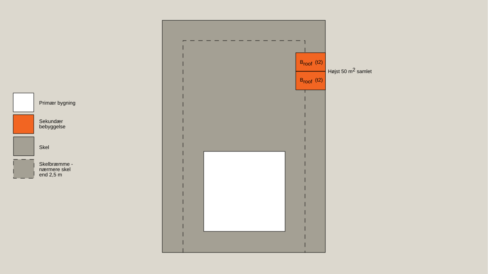
Figur 1: Sekundære bebyggelser med tagdækning klasse Broof (t2) [klasse T tagdækning] kan evt. sammenbygges og placeres i skelbræmmen uden sikring mod vandret brandspredning mod skel, hvis det samlede areal er højst 50 m2.
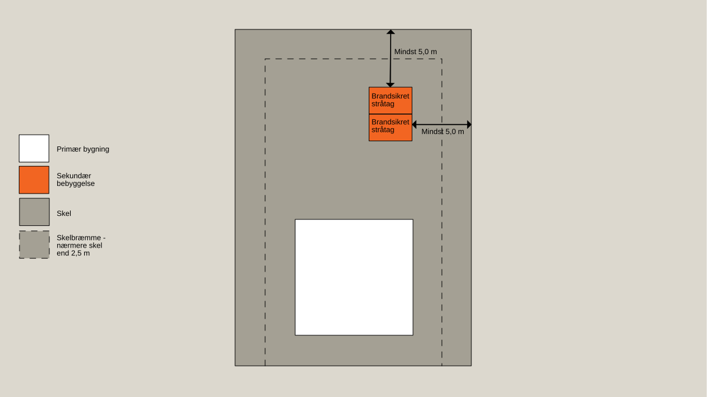
Figur 2: Sekundære bebyggelser med tagdækning af brandsikret stråtag kan evt. sammenbygges og placeres mindst 5,0 m fra naboskel.
Der er som udgangspunkt ikke krav til afstanden mellem sekundær bebyggelse og den primære bygning, hvis den sekundære bebyggelse overholder afstanden til skel, vej- og stimidte som angivet i Tabel 1 i afsnit 4.2.1. Bemærk dog, at der i visse situationer stilles krav til sikring mod vandret brandspredning, hvilet fremgår af afsnit 4.3.
Nedenfor er der angivet eksempler på, hvor sekundær bebyggelse kan placeres i forhold til den primære bygning og i forhold til naboskel.
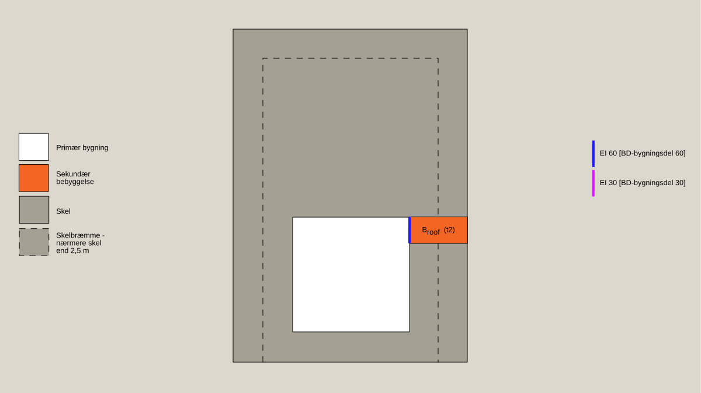
Figur 3: Sekundær bebyggelse med tagdækning klasse Broof (t2) [klasse T tagdækning] kan evt sammenbygges med den primære bygning og placeres i skelbræmmen. Der skal sikres mod vandret brandspredning mod primær bygning, hvis den sekundære bebyggelse er med mindre end 2 fuldt åbne sider, som f.eks. en garage eller udhus.
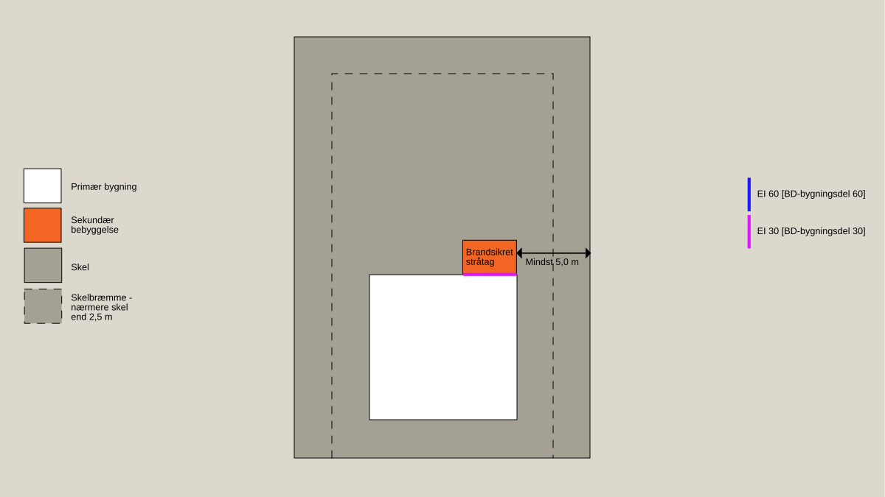
Figur 4: Sekundær bebyggelse med tagdækning af brandsikret stråtag kan evt. sammenbygges med den primære bygning og placeres mindst 5,0 m fra naboskel. Sekundær bebyggelse der er placeret nærmere end 1 m fra den primære bygning, skal sikres imod vandret brandspredning mod den primære bygning.
Hvis der er flere primære bygninger på samme grund, der har hver sin sekundære bebyggelse tilknyttet, skal afstanden mellem disse sekundære bebyggelser svare til summen af den tilladte afstand til skel, vej og stimidte som er angivet i Tabel 1 i afsnit 4.2.1 (dvs. at de skal være brandmæssig fritliggende).
Nedenfor er der angivet eksempler på, hvor sekundær bebyggelse, der er tilknyttes forskellige primære bygninger på samme grund, kan placeres i forhold til hinanden.
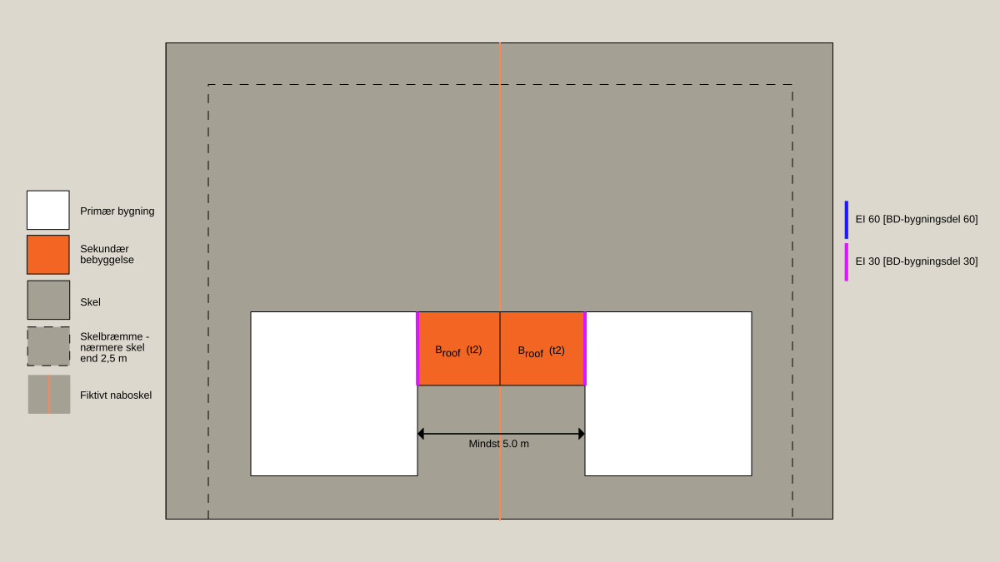
Figur 5: Sekundære bebyggelser på samme grund, der er tilknyttet forskellige primære bygninger, kan evt. sammenbygges med hinanden og med den primære bygning, hvis de sekundære bebyggelser er med tagdækning Broof (t2) [klasse T tagdækning], og hvis de primære bygninger er brandmæssig fritliggende. Sekundær bebyggelse der er placeret nærmere end 1 m fra den primære bygning, skal sikres imod vandret brandspredning mod den primære bygning.
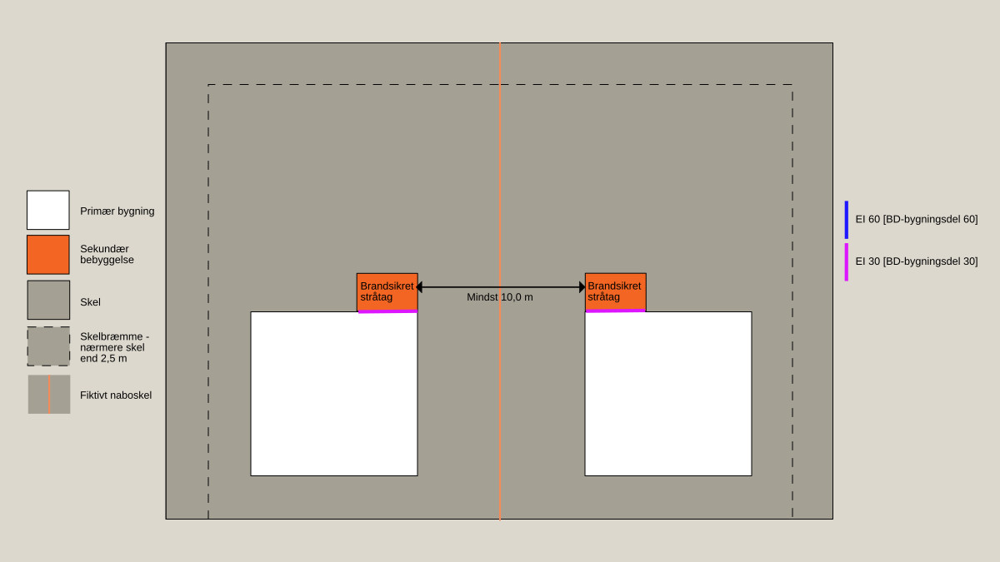
Figur 6: Sekundære bebyggelser på samme grund, der er tilknyttet forskellige primære bygninger, kan placeres mindst 10,0 m fra hinanden, og evt. sammenbygges med den primære bygning, hvis de sekundære bebyggelser er med brandsikret stråtag. Sekundær bebyggelse der er placeret nærmere end 1 m fra den primære bygning, skal sikres imod vandret brandspredning mod den primære bygning.
Vandret brandspredning
Linket er kopieret
I forhold til vandret brandspredning stilles der i nogle situationer forskellige krav afhængig af om den sekundære bebyggelse har mindst 2 fuldt åbne sider, eller mindre end 2 fuldt åbne sider. Sekundær bebyggelse med mindst 2 fuldt åbne sider omfatter bl.a. mange carporte og overdækninger, som, på grund af sine åbne sider, kan lede varme og røg væk mere effektivt end sekundær bebyggelse med mindre end 2 fuldt åbne sider, som bl.a. omfatter garager og udhuse.
Sekundær bebyggelse med mindre end 2 fuldt åbne sider, der placeres nærmere end 1,0 m fra den primære bygning, skal udføres med væg mod skel som bygningsdel klasse EI 30 [BD-bygningsdel 30]. Alternativt kan den del af væggen i den primære bygning, der er nærmere end 1,0 m fra den sekundære bebyggelse, udføres som en bygningsdel klasse EI 30 [BD-bygningsdel 30] i stedet for. Døre, vinduer og andre åbninger i den adskillende væg (der er nærmere end 1,0 m fra den modstående væg) skal udføres med den samme brandmodstandsevne som den adskillende væg. Døre skal således udføres som dør klasse EI2 30-C [BD-dør 30], og vinduer skal udføres som klasse EI 30 [BD-bygningsdel 30].
Der stilles ikke lignende krav til sekundær bebyggelse, der placeres nærmere end 1,0 m fra den primære bygning, hvis den sekundære bebyggelse er udført med mindst 2 fuldt åbne sider. Hvis den sekundære bebyggelse derimod er en garage med en fuldt åben side, kan døre i den adskillende væg udføres klassificeret som EI2 30 [BD-dør 30-M], idet disse døre normalt vil være lukkede.
Nedenfor er der angivet eksempler på, hvor sekundær bebyggelse, placeret mindre end 1,0 m fra den primære bygning, skal sikres mod vandret brandspredning.
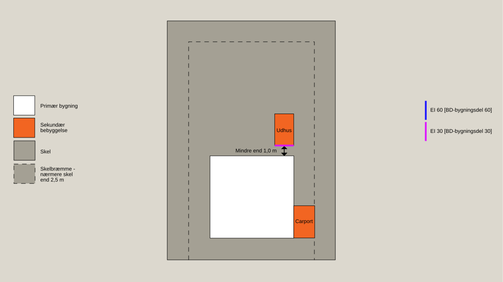
Figur 7: Sekundær bebyggelse med mindre end 2 fuldt åbne sider (udhuse og garager), der placeres nærmere den primære bygning end 1,0 m, skal sikres mod vandret brandspredning. Dette gælder ikke for sekundær bebyggelse med mindst 2 fuldt åbne sider (carporte og overdækninger).
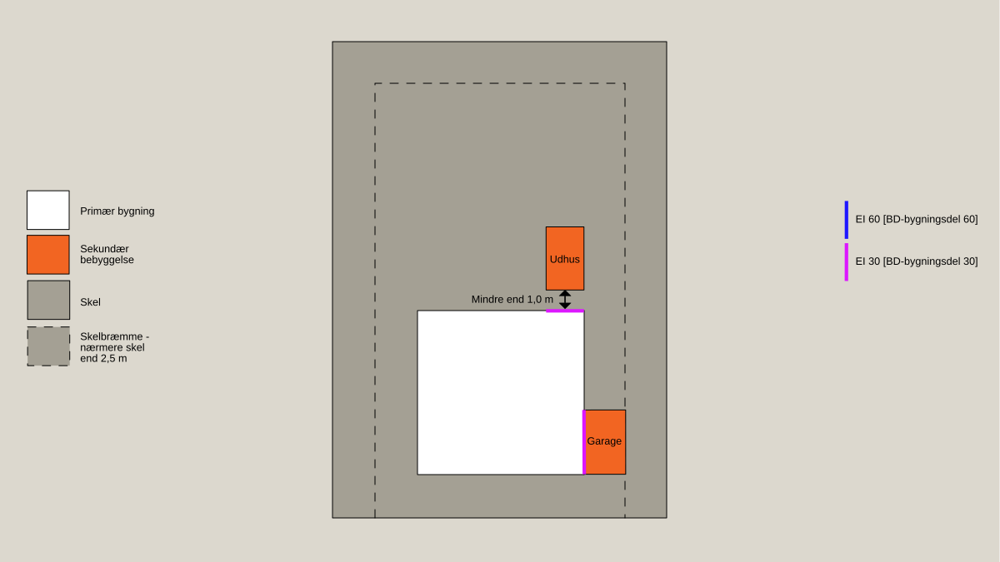
Figur 8: Sekundær bebyggelse med mindre end 2 fuldt åbne sider (udhuse og garager), der placeres nærmere den primære bygning end 1,0 m, skal sikres mod vandret brandspredning. Dette gælder ikke for sekundær bebyggelse med mindst 2 fuldt åbne sider (carporte og overdækninger).
4.3.1 Sekundær bebyggelse placeret nærmere skel end 2,5 m
Sekundær bebyggelse der opføres nærmere end 2,5 m fra skel, skal udføres med væg mod skel som bygningsdel klasse EI 60 [BD-bygningsdel 60], med mindre, at den sekundære bebyggelse er placeret 2,5 m fra den primære bygning (5,0 m, hvis det er et sammenbygget enfamiliehus). Brandadskillelsen kan være i væg mod skel eller væg mod den primære bygning, men skal føres frem i tæt forbindelse med den yderste tagdækning.
Sekundær bebyggelse som opføres nærmere skel end 2,5 m, må ikke have vindue mod skel.
Nedenfor er der angivet eksempler på, hvor sekundær bebyggelse, placeret mindre end 2,5 m fra skel, skal sikres mod vandret brandspredning.
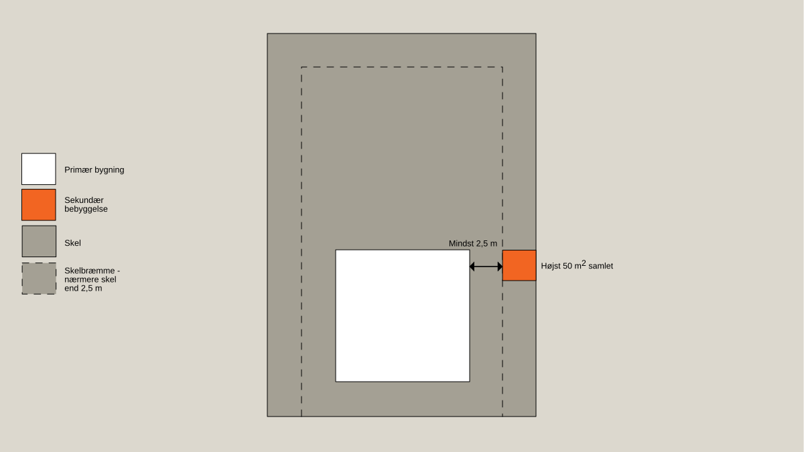
Figur 9: Sekundær bebyggelse placeret mindre end 2,5 m fra skel, kan opføres uden sikring mod vandret brandspredning, hvis bebyggelsen er placeret mindst 2,5 m fra den primære bygning, og er højst 50 m2
Figur 10: Sekundær bebyggelse placeret mindre end 2,5 m fra skel og mindst 1 m og mindre end 2,5 m fra den primære bygning, skal sikres mod vandret brandspredning.
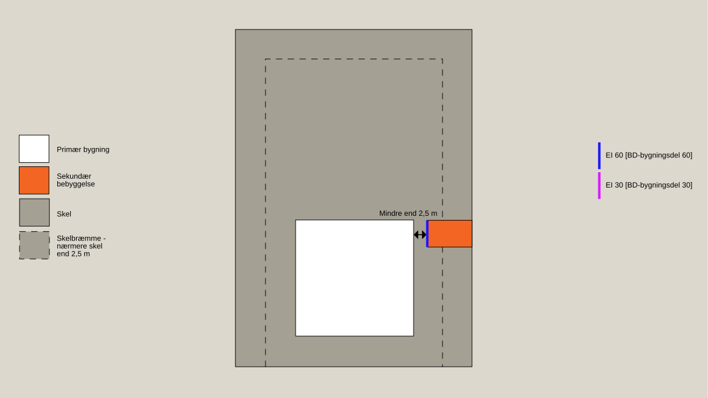
Figur 11: Sekundær bebyggelse placeret mindre end 2,5 m fra både skel og den primære bygning, skal sikres mod vandret brandspredning.
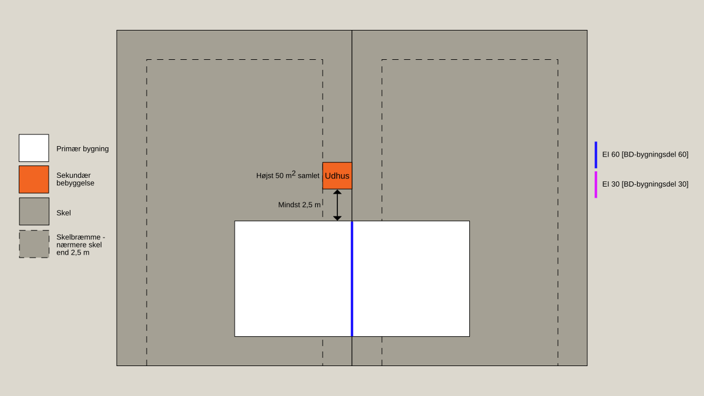
Figur 12: Sekundær bebyggelse placeret mindre end 2,5 m fra skel, kan opføres uden sikring mod vandret brandspredning, hvis bebyggelsen er placeret mindst 2,5 m fra den primære bygning (sammenbygget enfamiliehus)
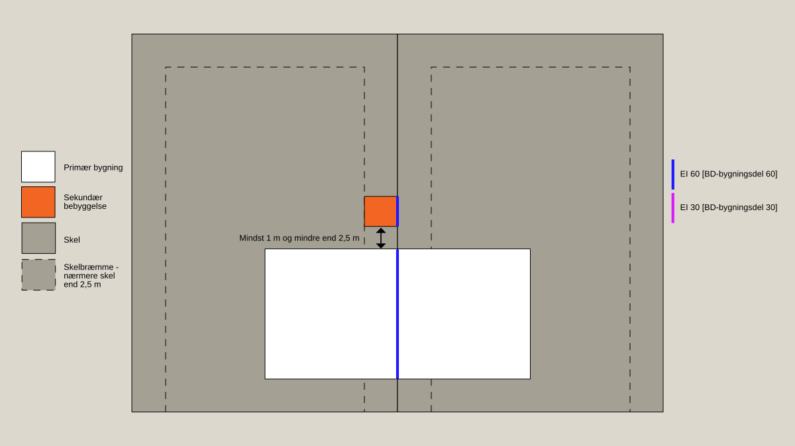
Figur 13: Sekundær bebyggelse placeret mindre end 2,5 m fra skel og mindre end 5,0 m fra den primære bygning (sammenbygget enfamiliehus), skal sikres mod vandret brandspredning.
Sekundær bebyggelse med et samlet areal på mere end 50 m2, der placeres nærmere skel end 2,5 m, skal udføres med væg mod skel som bygningsdel klasse EI 60 [BD-bygningsdel 60]. Arealet beregnes over flere sekundære bebyggelser, der indbyrdes ikke kan betragtes som brandmæssig fritliggende. Alle sekundære bebyggelser behøves i så fald ikke at være placeret nærmere skel end 2,5 m.
Hvornår bebyggelse er brandmæssigt fritliggende er nærmere beskrevet i afsnit 1.2.3.1.
Nedenfor er der angivet et eksempel på, hvor sekundært bebyggelse, der er mere end 50 m2, skal sikres mod vandret brandspredning.
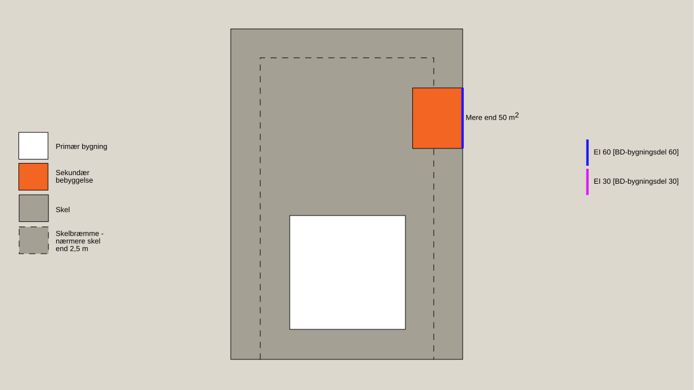
Figur 14: Sekundær bebyggelse med et samlet areal på mere end 50 m2, der placeres nærmere skel end 2,5 m, skal sikres mod vandret brandspredning.
Redningsberedskabets indsatsmulighed
Linket er kopieret
Det fremgår af BR18, kap. 5, § 126, at bygningers placering på grunden samt deres udformning skal sikre, at der i tilfælde af brand er forsvarlig mulighed for, at redningsberedskabet kan foretage afsøgning og redning og kan bistå evakuering af personer. Det skal ligeledes sikres, at der kan gennemføres det slukningsarbejde, der er nødvendig hertil samt til at begrænse væsentlig brandspredning mellem brandmæssige enheder.
Ved at følge nedenstående præ-accepterede løsninger, sikres det, at bebyggelsen kan betragtes som indsatstaktisk traditionelt, jf. BR18 § 10, stk. 1, nr. 7, og § 510.
For sekundær bebyggelse over 50 m2 skal den primære bygning på samme grund overholde de præ-accepterede løsninger for redningsberedskabets indsatsmuligheder som er angivet i bilag 1a – præ-accepterede løsninger - Enfamiliehuse.